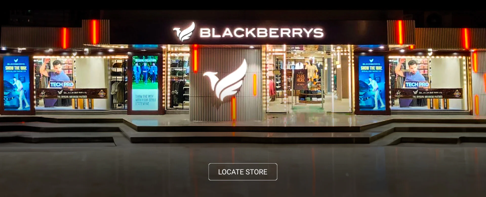

Shopping Outlets
.............................Shoppers stop.............................
.............................blackberry.............................
.............................being human.............................
.............................And many more.............................
*****************************************************************************************************************************
About
Shoppers Stop is home to a multitude of leading international and national brands for apparels, fragrances, accessories, cosmetics, footwear, home décor and furnishings catering to the needs of the entire family. We aspire to provide our customers a memorable international shopping experience. We are one of the largest chain of department stores across India.
.jpeg)
Our Vision Is,
“To be an inspirational and trusted brand, transforming customers' lives through fashion and delightful shopping experience every time”
- SIMPLE SHOPPING
Whether you shop online or in store or any of the leading third party marketplaces you get the same experience in terms of merchandise, price & service.
- SECURE SHOPPING
Shopping on our website is 100% safe and secure as we do not store complete details or payment information of your credit/debit card in our system. This is information is directly transmitted securely to the bank for payment processing. However, caution must always be taken by the customer while making transactions on any online venue.
- RANGE OF PRODUCTS AND BRANDS
We assort the collection from the best brands, trends, colours, fabrics, patterns to bring you a deep fashion selection wide across Men, Women, Kids, Fashion Accessories, and Home categories.
- FREE RETURNS
At Shoppers Stop we follow a policy that is – "We are responsible for what we sell". We offer free and easy returns on most of the merchandise bought online. If you are not completely satisfied with your purchase you can return the items via a courier pick up or exchange them in any of our stores across India.
- 100% ORIGINAL
We are responsible for what we sell and guarantee the originality of the products. All our products are sourced directly from the brands and carry brand warranty and genuineness certificate.
- FREE ALTERATIONS
We offer free alteration at any Store for products purchased on online as well.
EXPRESS STORE PICK UP
We provide the facility of express pick up service at the store. You can shop online and collect your order from the nearest or preferred Shoppers Stop store as per your convenience.
- PERSONALIZED SHOPPING AT STORE
We offer personal shopper service with prior appointment at our store. You can avail the assistance of personal shoppers who are experts to guide you to shop in an exclusive lounge at the store.
- PERSONAL SHOPPER SERVICE AT HOME
We also provide Personal Shopper At Home service and you can shop from the comforts of your home with prior appointment with assistance from our personal shoppers.
- PERSONALIZED SHOPPING GUIDE
We provide personalized shopping assistance by following our Style Hub which is curated with latest fashion trends and suggestions.
___________________________________________________________
About

At Blackberrys, we strive to transform the fashion needs and desires of today’s men and work tirelessly to deliver the handsome U. By listening to our customers, we foresee future trend aim to partner men to be loved by all. At Blackberrys, our commitment to excellence is woven into the very fabric of our brand. We meticulously design every aspect of our apparel and products to provide you with more than just clothing and cloak you with confidence.
With our belief in setting new benchmarks, we’re bringing innovations in our designs every day keeping the modern men in the center of it all. Our approach goes beyond the ordinary, ensuring that every Blackberrys creation is a testament to quality, style, and the pursuit of excellence. With us, you're not just wearing clothing; you're embracing a philosophy of aspiration and achievement as we are your partner in the journey towards success.
___________________________________________________________
About
.jpeg)
- The ‘Being human, The Salman Khan Foundation’ was started by Salman Khan's commitment to improving access to education & healthcare.
- The Foundation is a charitable trust devoted to empowering the underprivileged by shaping their lives through education and saving lives with its healthcare initiatives.Still, a relatively new brand in the world of clothing, Being Human has achieved so much in its 10 years thanks to its disruptive, innovative approach to retail, while not forgetting the true art of style.
- The brand has grown over 500+ retail touch-points and has continuously reinvented itself to become one of the leaders in casualwear clothing. And, it doesn’t stop with India. We are evolving at a rapid pace with a roadmap that leads to stores around the world.
- Our vision is to establish Being Human’s position firmly in casualwear.
Going forward, we aim to improve lives and change society for the better, with the power of clothing through the humanitarian work done by The Salman Khan - Being Human Foundation. Clothing can change lives - we believe in that.
___________________________________________________________
___________________________________________________________